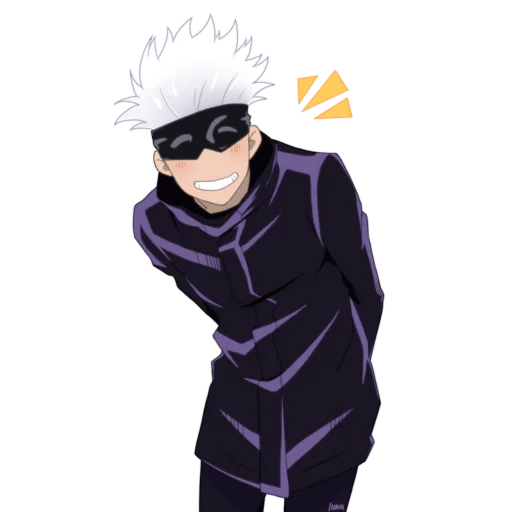

Сатору Годжо родился в одном из великих кланов (Годжо). Он стал первым за 500 лет, кто унаследовал одновременно Безграничность и Шесть глаз. С его рождением баланс вселенной нарушился, и проклятия начали становиться сильнее, изменив мир навсегда. В 17 лет Сатору стал сильнейшим магом, а в 27 лет начал обучать молодых ребят, чтобы воспитать и создать сильное поколение магов. 
Возраст 29 лет
Профессии Маг особого уровня, учитель первокурсников магического коледжа
Прозвище Сильнейший
Способен управлять самим пространством на атомарном уровне. У Годжо уникальная способность для обороны: любая вещь, которая приближается к Сатору, замедляется и никогда не достигает цели.
Проще говоря бесконечная проклетая энегрия
Кратко говоря
Синий-притягивает
Красный-отталкивает
пурпурный-комбинация красного и синего образующего иллюзорный пурпурный, пурпурный уничтажает все на своем пути.
список